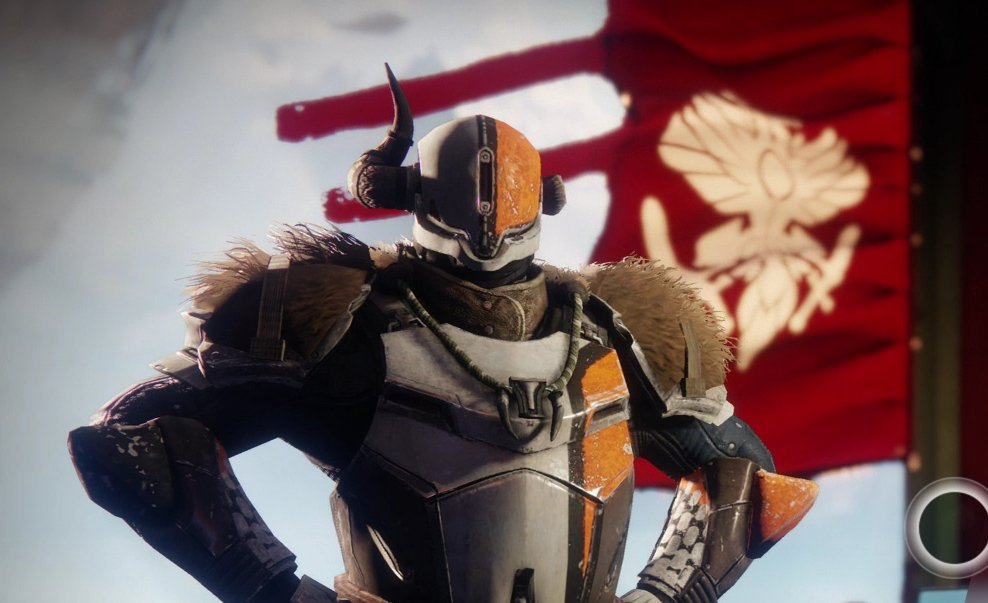

The Crucible
Lord Shaxx is one of the heroes of the Battle of the Twilight Gap, having led the counterattack that pushed the Fallen from the City walls. Fearing that another full-scale assault would be more than the City could repel, Shaxx chose to stay in the City to mentor Guardians in the Crucible.
One day Shaxx vows to return to the war beyond the City, but only after he is confident the fires of the Crucible have forged a new generation of warriors.